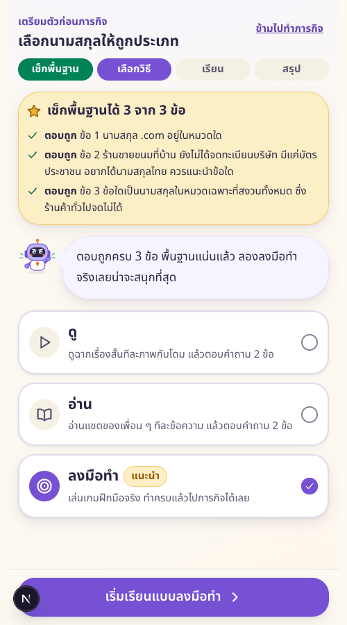
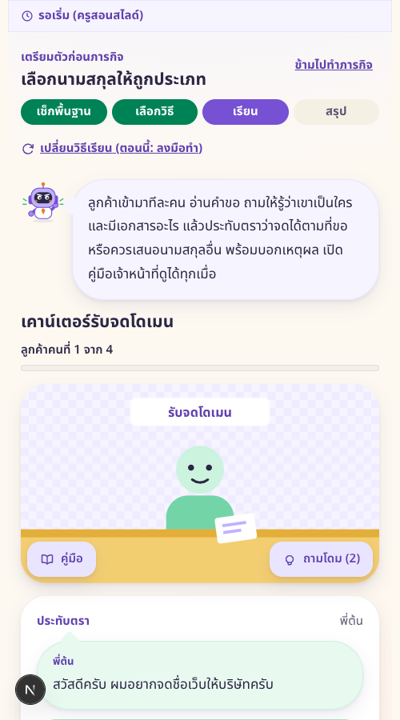
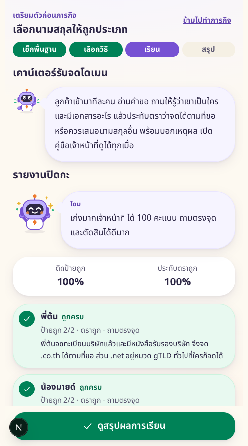
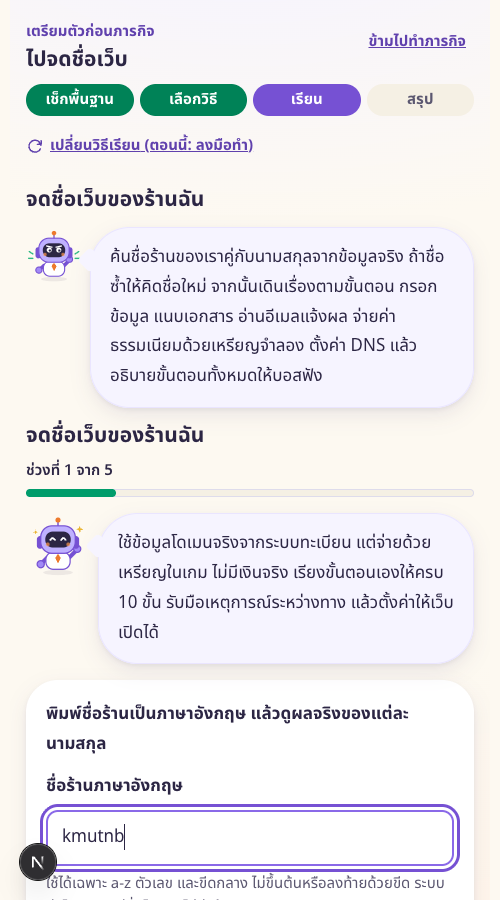
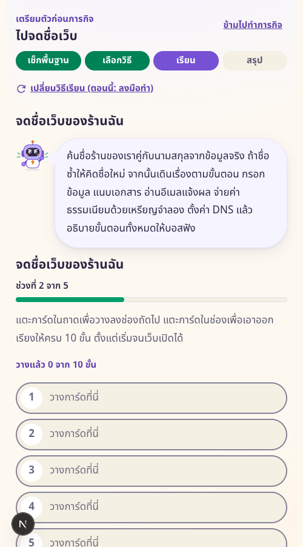
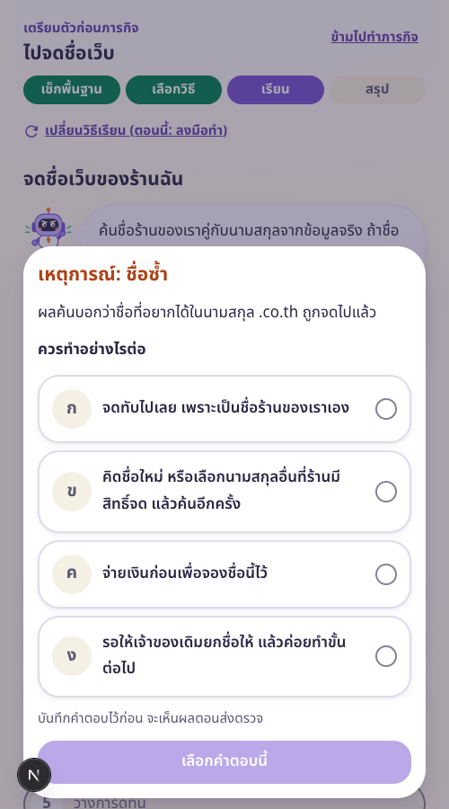
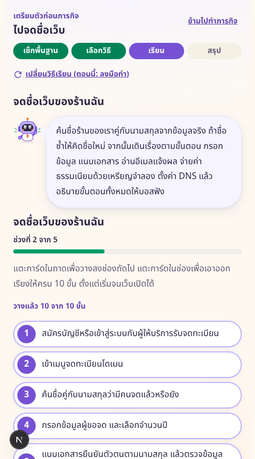
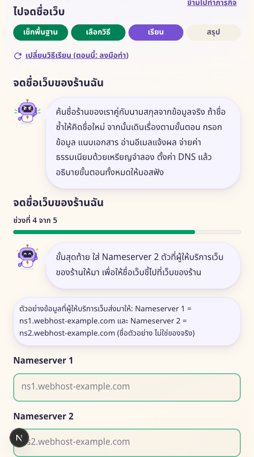
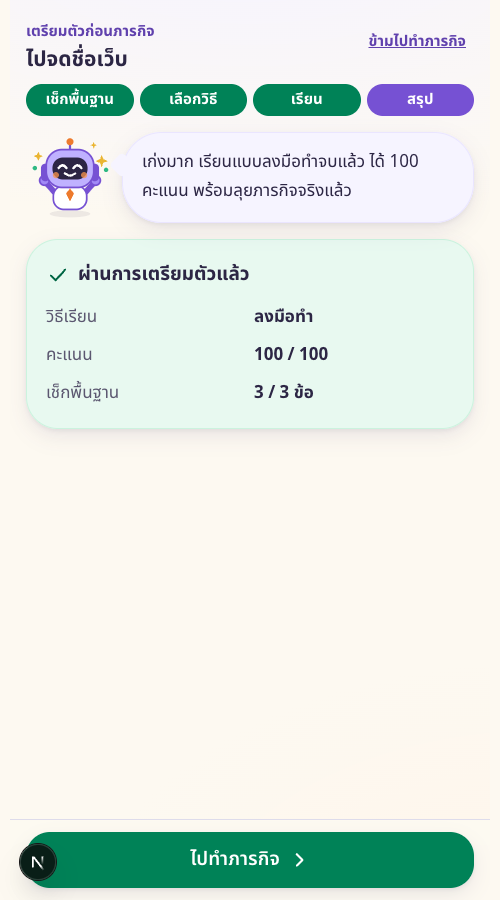

วิธีลงมือทำ ภารกิจ 3 และ 4
ด่าน 3 เกมเคาน์เตอร์รับจดโดเมน ด่าน 4 จดชื่อเว็บด้วยข้อมูลจริง จ่ายด้วยเหรียญจำลอง

ด่าน 3 แนะนำลงมือทำด่าน 3 ติดป้ายประเภท
ด่าน 3 ถามและประทับตรา
ด่าน 3 รายงานปิดกะ
ด่าน 4 ค้นชื่อจริง
ด่าน 4 แผงเดินเรื่อง
ด่าน 4 เหตุการณ์
ด่าน 4 วางครบ 10 ขั้น
ด่าน 4 ตั้งค่า DNS
ด่าน 4 สรุปผล